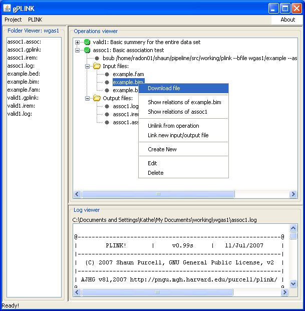

|  |
Viewing output filesHaploview also needs a MAP or BIM file to view SNP-based result files. We must therefore also download the BIM file that was associated with this analysis. We only need to do this once (i.e. if other analyses use the same dataset).Previous | Next |